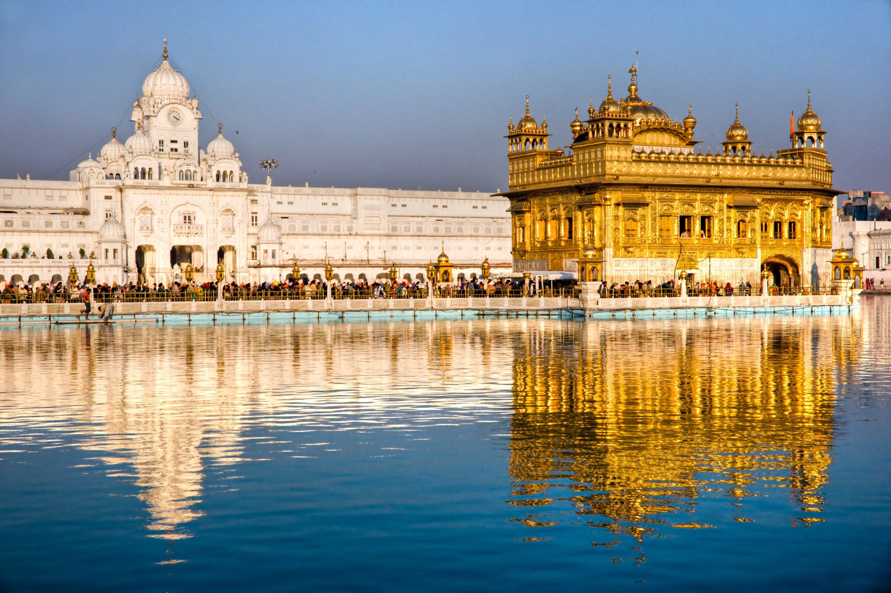
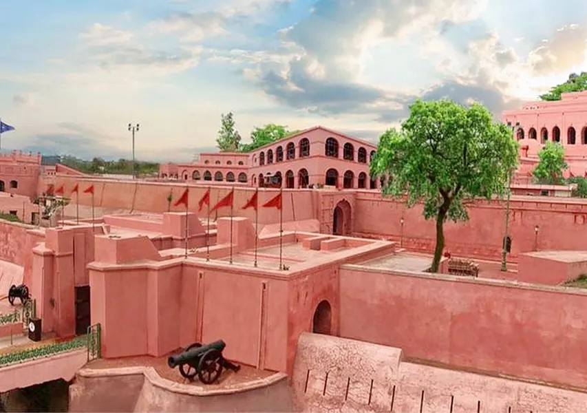
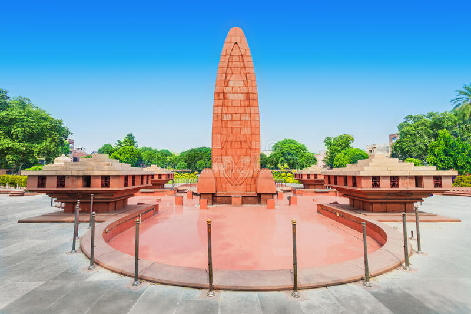
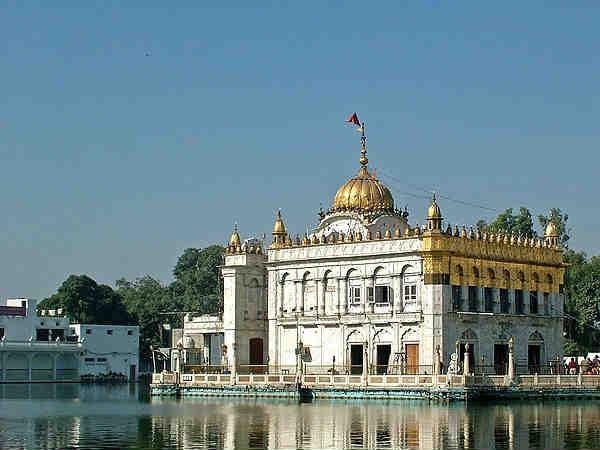
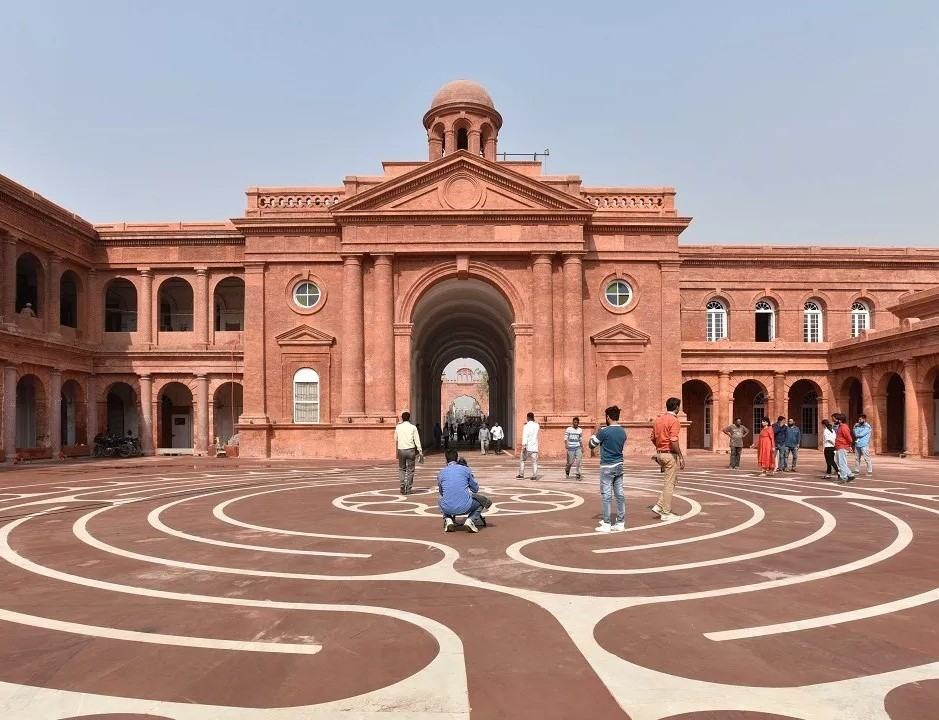
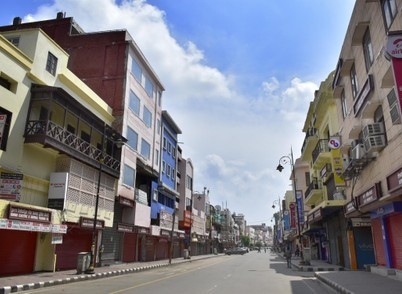
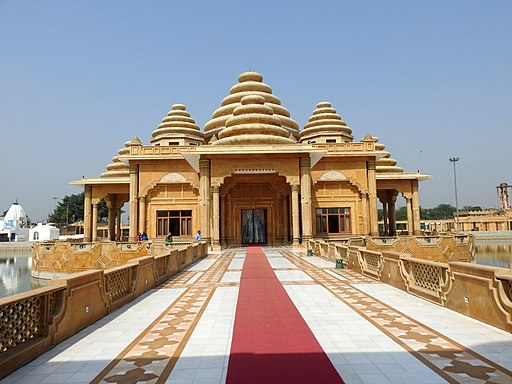
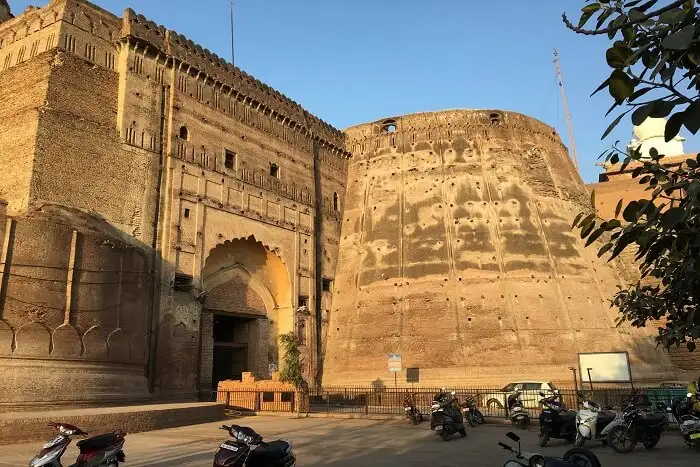

1-2 hours
Suggested time
2-3 hours
Suggested time
2-3 hours
Suggested time


| Golden Temple Near Amritsar | Gobindgarh Fort | Jallianwala Bagh |  |  |  |
|---|---|---|
| Also known as Sri Harmandir Sahib, Golden Temple is considered to be the most important pilgrimage site amongst Sikhs and will leave you in awe with its jaw-dropping gold and marble edifice.
2-3 hours |
Popularly known as ‘Bhangian da Killa’, this sprawling mud fortress served as a military preserve earlier and was declared as a historical monument by the Government of Punjab in 1964.
1-2 hours |
Built in the honour of those who were wounded and martyred in the Jallianwala Massacre, this public garden houses a memorial structure, a museum, and a gallery to commemorate the tragic incident.
Around 2 hours |
| Sri Durgiana Temple | Partition Museum | Hall Bazaar |  |  |  |
|---|---|---|
| Dedicated to Goddess Durga, this temple is popularly known as Sitla Mandir. Built in the middle of a lake, its architectural style is similar to the iconic Golden Temple.
1-2 hours |
Located in the historic Town Hall, the museum was opened in August 2017 to commemorate the seventieth anniversary of India's partition and houses artefacts and collections narrating the story of partition.
1-2 hours |
One of the oldest market complexes in the city, Hall Bazaar is located on the way to Golden Temple and is dotted with narrow lanes that sell everything from handicrafts to jewellery and home décor items.
2-3 hours |
| Ram Tirth Temple | Attari-Wagah Border | Bhatinda Fort |  | |
 |
|---|---|---|
| Also known as the Bhagwan Valmiki Tirath Sthal, the temple is believed to be at the same spot that housed the hut where Goddess Sita gave birth to her sons, Luv and Kush.
1-2 hours |
Popularly called Qila Mubarak, this centuries-old majestic fort is perched at a height of about 118 feet in Bathinda, about three hours away from Amritsar.
2-3 hours |
Located about 40 minutes from the main city, Wagah Border serves as the demarcation between India and Pakistan and is visited by tourists in large numbers to witness the lowering of the flags ceremony.
2-3 hours |